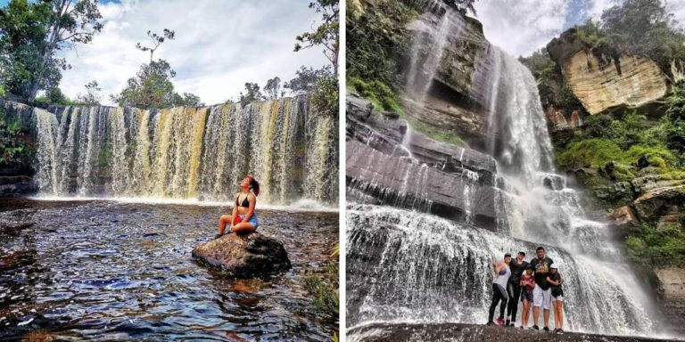

Parque nacional del chicamocha-panchi
Ubicado en el corazón del imponente, majestuoso y fascinante Cañon del Chicamocha. El parque Panachi es uno de los destinos turísticos más
importantes de Santander, donde se hace honor a la santandereanidad con un hermoso monumento. Es un lugar para visitar donde encontrarás:
--Plazas, un mirador °360, Avestruces y cabras.
Asimismo, para los amantes de la aventura y la adrenalina, opciones como:
--Parapente, Cablevuelo, Columpio extremo, Buggies, Teleférico y un Acuaparque.
--Te lo advertimos, se que en estos momento deseas estar allá.
Ubicado a 1 hora y 30 minutos de Bucaramanga
Cascada de los caballeros y Gambita
Para los amantes de la Naturaleza la Cascada los Caballeros es una imponente cascada de más de 120 metros, ubicada en el Municipio de San José de Suaita. Y a unos 40 minutos se ubica Gambita otro municipio con una gran riqueza hídrica como la Cascada la Humeadora, el Manto de la Virgen y Cueva del Choco. Vivir una aventura completa es conocida como la Ruta de agua: varios días donde se exploran cascadas, cuevas, cañones y jacuzzis naturales. Una experiencia inolvidable. San José de Suaita es de esos sitios turísticos de Santander que todo amante de la naturaleza debe conocer.Ubicado a 5 horas de Bucaramanga y a 4 horas y media de Bogotá

San Gil : Capital de los deportes extremos
Intentar remar dentro de los rápidos del río Fonce; entrar volado y salir nadando de la cueva del indio; saltar con un arnés en los tobillo desde una plataforma de 70 metros con Bungee Jumping o, tambien, andar en bicicleta sobre un cable en equilibrio a unos 160 metros de altura con el Bici Cable. Estos son unos, de los tantos deportes Extremos, que puedes hacer en San Gil: uno de esos sitios turístico de Santander fuera serie. Por esta razón, Si eres amante de la adrenalina y las emociones fuertes este será el lugar para ti Ubicado a 2 horas y 30 minutos de Bucaramanga